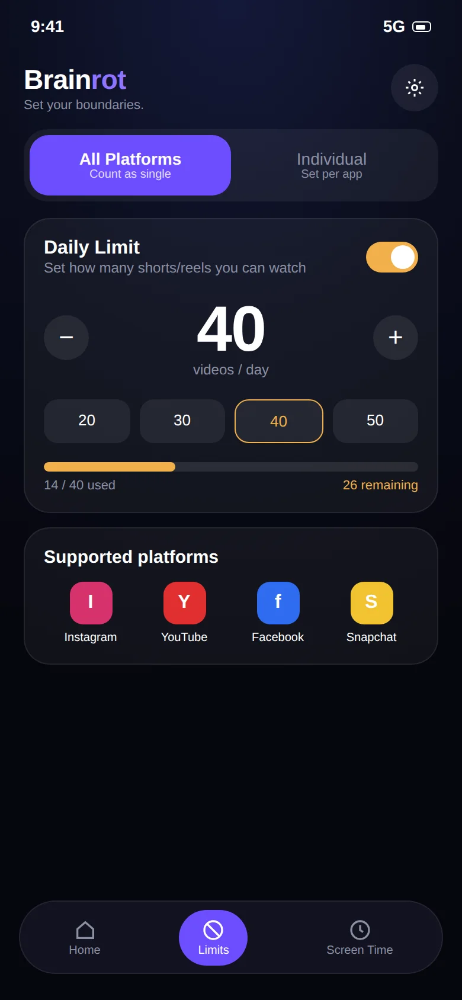
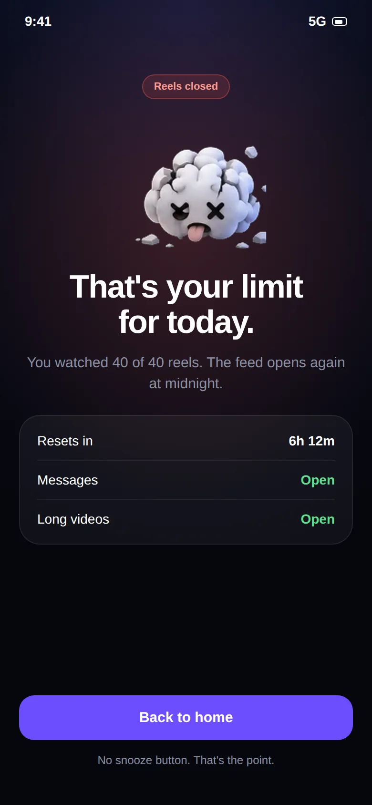

Block Instagram Reels. Keep Instagram.
Set a daily Reels limit, from zero to as many as you like. Brainrot closes the Reels viewer when you reach it, and leaves your messages, Stories and profile alone.

Instagram gives you no off switch for Reels.
Reels are now one of the main reasons people open Instagram, and the app has no setting to hide them. So you either delete Instagram and lose your messages, or you open it for one DM and surface half an hour later.
Brainrot sits between those two options. It lets Instagram stay installed and useful, and limits only the Reels viewer.

Count the Reels. Close the viewer at your limit.
- Set a number: 0 for a full Reels ban, or 10 to 30 for a light daily allowance
- Open Instagram normally. Messages, Stories, profiles and posts are untouched
- Every Reel you swipe past adds one to the counter
- At the limit, the Reels viewer closes and a stop screen appears

What it blocks, and what it doesn't.
Being clear about this is the whole point of the app.
Reels
The vertical Reels viewer, including Reels opened from the Reels tab, the home feed and search.
Everything else
Direct messages, group chats, Stories, profiles, regular photo and video posts, notes and search for people.
Instagram changes its app often. If a layout change ever stops counting, update both apps and let us know.
Keep reading.
Guides and pages that go deeper on this topic.
Common questions.
Can I block Instagram Reels but keep Instagram DMs?
Yes, that is the main use case. Brainrot counts videos in the Reels viewer. Direct messages, your profile, Stories and the regular feed stay open. When you hit your limit, only the Reels feed is closed. See the Instagram Reels blocker page for the details.
How is Brainrot different from a normal app blocker or Digital Wellbeing?
Normal app timers lock the whole app, including the parts you need, like Instagram DMs or YouTube tutorials. That is why people end up tapping "ignore limit" and going straight back to the feed. Brainrot counts and limits only the vertical short-video feed, so the rest of the app keeps working.
What happens when I reach my limit?
Brainrot shows a stop screen and takes you out of the short-video feed. You can still use the rest of the app and the rest of your phone. The counter resets the next day.
Does it work on iPhone?
Not at the moment. Brainrot relies on Android's Accessibility Service, which is what makes per-video counting possible. iOS does not offer an equivalent, so the app is Android-only.
Take your scroll back.
Free on Google Play. Set a limit in two minutes and keep every app you actually need.